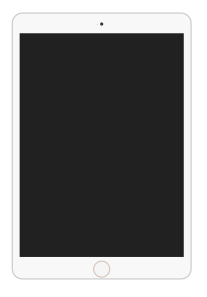
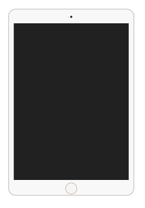
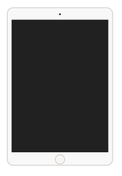

Oi, eu me chamo Newton e sou desenvolvedor Front-end
 
Saiba mais sobre mim


Oi, eu me chamo Newton e sou desenvolvedor Front-end
Saiba mais sobre mim
Desenvolvedor web apaixonado por tecnologia e pelas facilidades e inovações que ela pode oferecer. Crio projetos e soluções eficazes, mantendo sempre o foco em uma boa estética. No momento atuo como freelancer no mercado.

teste